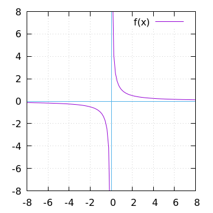

Modern Computational Methods
\(\require{cancel}\)1 Preface
Today there are twice as many computing devices connected to the Internet as people in the world1, and yet hardly anyone knows that computers and the digital world in general are based on a different sort of math than what we learned in school, namely, something called discrete mathematics. Discrete math deals with things that are separated and compartmentalized into distinct states, conditions, steps, points, intervals, phases; things done in whole units such as litters of kittens (no such thing as fractions of kittens), counties in a state (no half- or three-quarter counties), and then all the “digital” things switching on and off or back and forth, making distinct beeps and clicks, lighting up and going dark again—rhythmically or randomly.
The first chapter, our ground chapter, is called Chapter Null since we will be laying out the most fundamental ideas concerning what is discrete mathematics. So if computers are doing discrete math, then what was that stuff we learned in school? What sort of math is Algebra, Geometry, and Calculus? We will take a closer look at what is now called continuous math, the everyday math of physics and engineering in order to better understand discrete mathematics.
2 Chapter Null: Continuous versus Discrete
Shall we begin?
—Anonymous
To understand discrete math, we should take a quick look at continuous math—and a few of its vagaries. By understanding what makes something continuous or not continuous, we will better understand why mathematics is divided into these categories continuous and discrete.
Continuous math measures things as exactly as we want, e.g.2, things measured by weight or height or path or distance-displacement. In physics, a planet going around the sun follows its orbit in a continuous motion, where the velocity3 and position can be measured to an exacting degree. That is, when we consider a continuous path or orbit, we mean smooth continuous—as in not broken up into chunks—more than we mean constant continuous. In general, continuous math works in the world of extreme measurement accuracy.
Continuous math can also be deterministic in that knowing facts such as an object’s position and speed allows us to determine its precise position at a later or even an earlier time. For example, if you know a car has passed you on the road at exactly 2:00 p.m. going an ever-steady \(60\) miles per hour, you can predict that it will be \(1\) mile further down the road \(1\) minute later, and then \(60\) miles further \(1\) hour later. Likewise, you can also predict where it was before it passed you. Again, the car's motion is continuous in the sense that it is not broken up into chunks by stops.
Here’s a very simple formula for knowing the distance traveled based on a speed and a time—assuming continuous motion:
\begin{align*} d(t) = vt \end{align*}So if our velocity (v) is \(60\) miles per hour and our time (t) underway is \(30\) minutes
\begin{align*} d & = \frac{60 \, miles}{hour} \cdot \frac{30 \, minutes}{1} \\ & = \frac{60 \, miles}{\cancel{hour}} \cdot \frac {1 \, \cancel{hour}}{2} \\ & = \frac{60 \, miles }{2} \\ & = 30 \, miles. \end{align*}
Figure 1: The distance :: time ratio
Just by looking at the smooth, continuous line in the graph above, we see that any increment of time along the horizontal axis, however small, will result in some new exact distance along the vertical axis. For example,
\begin{align*} d & = 60 \, mph \cdot 0.50001 \, hours \\ & = 30.0006 \, miles \end{align*}or roughly \(30\) miles and a few inches, which, again, our graph can tell you—if you enlarge it or use a magnifying glass on it. This means, theoretically at least, we can chart an infinitesimally short amount of distance traveled from an infinitesimally short increase in time from the previous time. So when we speak of something being continuous, it also means that input and output are plottable on a very finely divided line—so fine that it is, practically speaking, no longer individual jagged, stop-and-go stair steps, rather, a smooth, continuous line. This may seem obvious, but it was a big philosophical conundrum for a long time, a mathematical paradox, as they say. Now, should we consider the change from \(30\) miles to \(30.0001\) a “bump-up,” i.e.4, an abrupt jump that looks like a stair step? Maybe? What about a change in time that results in a change from \(30\) miles to \(30.00000000001\) miles? That would only be adding \(0.000000634\) (\(6.34e\!-\!7\)) inches. The question of resolution, or how close-up we might look at a phenomenon, has always been a big question in continuous math.
The most ubiquitous mathematical construct or model for such finely divided or differentiated things is the real number line. For all intents and purposes, the resolution, the fineness, the granularity, the number of “ticks” on a time line should map or correspond exactly to “spots” on the theoretically infinitely fine real number line. Said differently, each tick of a clock—however short we might define the ticking intervals—will have a sister place on the real number line. But again, how small do the changes from one spot to the next have to be in order to start calling it a smooth slope rather than a jagged stair step?5
So we're beginning to have a usable idea of what a continuous phenomenon is. In algebra you probably discussed all sorts of continuous functions. Many Algebra texts introduce the concept of discrete by simply having you plot a hand-full of discrete points—and then joining or not joining the points together. And then you might have seen something like this:
\begin{align*} f(x) = \frac{1}{x} \end{align*}
Figure 2: Y approaches infinity as X approaches 0 from either side
Here we notice that as we try to plot \(f(x) = 1/x\) from negative \(x\) up to \(0\) there doesn’t seem to be a value right at \(x = 0\) —which is, of course, consistent with what we’ve learned in school, namely, that to divide by zero is undefined, i.e., impossible!, meaning there cannot even be a value at $x = 0$—which therefore means \(1/x\) is dis-continuous6. The result is a graph that clearly goes crazy up close on either side of \(0\). Your algebra course probably included this in the mix just to show you an oddity, but there are many phenomena that do not progress in a smooth way. In math parlance they are called discontinuities, and they’re not quite discrete but getting close. Consider this graph:

Figure 3: Big stair-step, but still continuous
What sort of function would produce such a graph? Maybe you recall something like \(f(x) = 3\), which would simply be a straight horizontal line at \(y = 3\). But what sort of function would suddenly jog up and over? Consider
\begin{align*} s(x) = \left\{ \begin{array} {r@{\quad \mathrm{if} \quad}l} 1 & \, x \geq 0, \\ \!\! 0 & x < 0 \end{array} \right . \end{align*}This function isn’t like the usual one-line formulae, but it makes sense. In fact, this function remains continuous, even though it does a stair-step jump. But then consider
\begin{align*} s(x) = \left\{ \begin{array} {r@{\quad \mathrm{if} \quad}l} 0.03 & \, x \geq 0, \\ \!\! -0.03 & x < 0 \end{array} \right . \end{align*}
Figure 4: Smaller stair-step, still continuous
So if we keep making the two conditions of the function closer and closer, the jog from the lower section to the higher will get smaller . . . until it collapses back to a smooth-looking \(f(x) = 0\)
\begin{align*} s(x) = \left\{ \begin{array} {r@{\quad \mathrm{if} \quad}l} 0.003 & \, x \geq 0, \\ \!\! -0.003 & x < 0 \end{array} \right . \end{align*}
Figure 5: Tiny stair-step, still continuous
Now it’s barely discernible. Now, what about excluding \(0\) as we did with \(f(x) = 1/x\)?
\begin{align*} s(x) = \left\{ \begin{array} {r@{\quad \mathrm{if} \quad}l} 0 & \, -2 < x < 0, \\ \!\! 1 & 0 < x < 2 \end{array} \right . \end{align*}
Figure 6: No longer continuous
Here we have the discontinuity at \(0\) not dissimilar to \(f(x) = 1/x\). Notice also that these last few functions are defined by breaking up their behavior over separate intervals. Instead of just one interruption calling for two conditions, we might have many interruptions and many conditions…
\begin{align*} s(x) = \left\{ \begin{array} {r@{\quad \mathrm{if} \quad}l} 0 & \, -2 < x < 0, \\ \!\! 1 & 0 < x < 2, \\ \!\! 2 & 2 < x < 4, \\ \!\! 3 & 4 < x < 6. \end{array} \right . \end{align*}…but at some point we should switch to a different notation and depiction.
The World of Discrete Mathematics
As mentioned in the preface, discrete math deals with separate, discrete processes, i.e., things that are usually represented with non-decimal, non-fractional whole numbers, systems of finite, non-smoothly associated objects—jagged stuff that jumps from one value to the next.
To go from the world of continuous to discrete, sometimes all we need to do is simplify. Consider this “regular” map, which is pretty much trustworthy spatially-geographically, meaning the area and angles haven’t been distorted:
Figure 7: Google map of Manhattan and the East River
Then consider these two subway maps. Subway map A was designed by Lella Vignelli and subway map B was designed by Michael Hertz Associates, both on commission for the New York subway system:

Figure 8: Thematic maps of New York City’s subway system
Most of us have seen these kinds of specialty maps. Subway maps A and B are a type of thematic map. A thematic map might start with a regular map, but then emphasizes a special theme. Comparing the maps in Figure 8, subway maps A and B, we see that map A is highly simplified, or stylized—to the point of not representing the geographical truth of that part of New York City very well. But then map B seems a bit stylized as well. Is map B just a Google map with the subway lines added on top? We can't be sure. Compare the Williamsburg Bridge in all three maps (noted by the big red sphere). All three bridges are shown differently—although it's safe to say the Google map shows how the bridge is situated in the real world, i.e., its real length and where it connects at each bank of the East River (cartographers call this areal and angular integrity). In any case, the Google map seems to have more detail, especially along the shore, than the other two maps. And yet map A, bright-and-simple, has everything we really need as subway riders:
- the subway lines
- the subway stops
- the major streets associated with the subway lines
- roughly where the subway lines are geographically…
…where “roughly” is probably good enough, right? After all, when you board a subway—which spends a lot of its journey underground—the whole world seems to shrink down to just knowing what stops are coming up. Direction, distance, time between stops don’t seem so important. Not too different from riding an elevator in a tall building where all you need to know are floor numbers and the actual distance and time don’t really matter. Both subways and elevators are different from, say, driving a car and using a road map where you do like to see the direction (angular integrity) and distances (areal integrity) on the map as you drive along.
Of the three maps, the Google map, as well as subway map B might allow you to think in terms of time and space normally, but with subway map A? Not so well. Let's think about time itself, and how we might ride in a subway train and figure out where we are if we know elapsed time and subway train velocity—just like we did above with the car going down the road at \(60\) miles per hour for thirty minutes. If we’re using the Google map we might have an equation just like \(d(t)=vt\) to tell us how far we've driven down one of the New York streets relative to the time and the velocity. And yes, \(d(x)=vt\) might work with subway map B as well. But what about super-stylized subway map A? Because it is so spatially generalized, we can’t really plug in a precise time and velocity and know exactly where we are on the orange, brown, green, or yellow lines. Those subway lines seem to go very straight then suddenly make right-angle turns. That’s not how the lines run in reality. We might still try to create a formula for map A, however. not based on time and velocity. Let’s consider a very small corner of the New York City Subway, namely, the Staten Island Railroad:
Figure 9: Staten Island Railroad
Taken from the Vignelli map, we can see this rendition of Staten Island is not meant to be geographically accurate. Let’s take a stab at creating a function:
\begin{align*} S(n) = ??? \end{align*}??? indeed. What are we trying to do here? So if we’re not asking for an exact distance or position—which we can’t really get from such an abstracted map—can we perhaps create a formula that tells us which subway station corresponds to a stop number on the line? For example, what station is the fifteenth stop? Here is our first attempt:
\begin{align*} S(15) = M\sdot15 = Annadale \end{align*}where \(M\) is some sort of subway stop machine and \(M\) “times” a whole number (up to \(21\)) results in the name of a station. We’re stuck. . . .
In the past you probably skipped over this issue entirely by simply creating a table such as this:
| STOP | STATION |
|---|---|
| 1 | St. George |
| 2 | Tomkinsville |
| 3 | Stapleton |
| 4 | Clifton |
| 5 | Grasmere |
| 6 | Old Town |
| 7 | Dongan Hills |
| 8 | Jefferson |
| 9 | Grant |
| 10 | New Dorp |
| 11 | Oakwood Heights |
| 12 | Bay Terrace |
| 13 | Great Kills |
| 14 | Eltingville |
| 15 | Annadale |
| 16 | Hugenot |
| 17 | Prince’s Bay |
| 18 | Pleasant Plains |
| 19 | Richmond Valley |
| 20 | Arthur Kill |
| 21 | Tottenville |
then plotted the values onto a two-dimensional Cartesian coordinate system. But the graph of this data wouldn’t be possible—we have numbers for the horizontal axis, but just words for the vertical axis. Nonsensical.
In general, math likes to package phenomena as concisely as possible. After all, Algebra got its start when Muhammad ibn Musa al-Khwarizmi first began abstracting individual mathematical statements into general symbols.
Now, let's go back to one of the main differences between continuous and discrete, namely, how we get from one place or situation to the next. Do we go smoothly or in separate, discrete jumps? Consider input values for the simple equations below:
\begin{align*} f(t) = 2t \\ f(n) = 2n \end{align*}By \(t\) we mean time and by \(n\) we mean whole numbers. But we know from our discussion above that time is a dimension that can be very finely divided, so fine that when we plot time it can seem all but continuous.7
Fibonacci, factorial…
Which map do you like best? It's probably a matter of taste. Again, neither of the subway maps could be called accurate for exact measurements. However, the bright-and-simple mapping style depicted on the left has come to dominate subway maps. Now, let's see a really clever simplification from the early eighteenth century called The Seven Bridges of Königsberg by the Swiss mathematician Leonhard Euler.

Figure 10: The seven bridges of Königsberg
Euler, who lived and worked in the Prussian city of Königsberg, wondered if he could cross each of the seven bridges over the Pregel River connecting the city's north bank, south bank, and the two islands one after the other and, with no repeated crossings, deliver him back to his starting point.
Looking at the three images above, it seems the last image has no real geography to it at all. But if you study how the original map is thematically stylized into the middle map, then you might be ready for the next leap of abstraction, namely, that the whole issue of land, rivers, and bridges can be reduced to something of points and lines—with no concern for its reality geographically. This was quite the sensation back in the 1730s
But to what end are we making this crazy spatial abstraction? It turns out the main motivation for this geography-free diagram was the simple question of whether a person could walk across each and every bridge in succession and get back to the starting point—without retracing, i.e., recrossing a bridge.
The Seven Bridges of Königsberg problem is considered the birth of graph theory, a prominent member of the discrete mathematics family. A graph in this context is not a Cartesian graph, but a set of points, or, technically, vertices (singular: vertex8) and the lines, or, technically edges that connect the vertices.
Consider a coin-operated turnstile9. You put a coin or token in and it allows you to push through the metal bar; otherwise, the bar blocks your passage.

Figure 11: Torniquet-style turnstile
We can model a pay turnstile as a system with two states: locked and unlocked. Let's look at a table:
| Current State | Input | Next State | Output |
|---|---|---|---|
| Locked | coin | Unlocked | Unlocks the turnstile so that the customer can push through. |
| push | Locked | None | |
| Unlocked | coin | Unlocked | None |
| push | Locked | When the customer has pushed through, locks the turnstile. |
3 The so-called real-world
In regular math we see functions, expressions, equations. A function is a statement, an equation is a statement, a mathematical expression is also a statement of some mathematical relationship, hopefully accurate and true. Math builds, derives, juxtaposes functions, expressions, equations to get at some basic, fundamental truth of the matter at hand. With an equation like \(y = y_0e^{kt}\) we see a factory

Figure 12: Courtesy of Wikimedia Commons
{kind=link}
of sorts that takes a thing \(y\), perhaps a bacteria blob—at an initial starting time \(t = 0\), that is, the blob's state at $y_0$—and multiplies it by Euler's "magic" constant \(e\) raised to the power of \(kt\), where \(t\) is time and \(k\) is a constant, i.e., \(e^{kt}\). What is this for? What does it do? Well, to begin answering this question many mathematics teachers would first want their students to know where the equation came from—maybe not the whole historical rendition of when and who plucked it out of the mathematical void—but students should see that it is derived using valid, mathematically-legal substitutions and simplifications from a more basic mathematical statement
\begin{align*} \frac{dy}{dt} = ky \end{align*}. . . then the students do some homework problems, and maybe see in on a test. And there the ball stops—until a day comes when one of them must use the exponential rate of growth (or decay) dependent on initial size formula in a real-world setting—invariably on a computer; invariably in a much messier situation than the Calculus text problem set.
We will use the language Racket the computerization of math and numerical things Emacs Lisp is a "dialect" of Common Lisp, which means it does a few things slightly different than mainstream Common Lisp, but is still a Lisp programming language. Why should we use Emacs Lisp? Because it is tightly integrated with the editor we will use, Emacs. And why should we use Lisp? Because it is a very powerful language with a long and storied history. Some people say Lisp is the most powerful language.
Being a Lisp, Elisp, as Emacs Lisp is nicknamed, comes from a long tradition of higher-level research computer science. Lisp (an acronym for LISt Processor) is very old (only Fortran is older) and is based on functional and declarative computing paradigms. What is a functional and a declarative programming language? We will explore these concepts as we learn Elisp. But for now just think of a regular mathematical function such as
\begin{align*} f(x) = x^2. \end{align*}The first thing we see is that we declare rather than describe imperatively a relationship. Before the Persian scholar al-Khwarizmi of the ninth century, mathematics could be rather wordy. Al-Khwarizmi is credited with starting Algebra, which is based on the concept of symbols such as letters representing numbers. Therefore, we can write
→ take 5 from the user and store it in a memory location
→ make a copy of 5 and put it in a new memory location
→ multiply 5 and 5 together and put the answer 25 in a memory location
→ present the answer 25 to the screen
as
(defun f (x) (* x x))
Footnotes:
As of 2018.
e.g.: exempli gratia, which is Latin, meaning for example.
Velocity is a composite of speed and direction, or, a certain speed in a certain direction. In Vector Calculus, velocity is a vector and is typically drawn as an arrow, while speed alone is just an amount, or a scalar. So imagine an arrow pointing in a certain direction, then scale that arrow as big as the speed is large. This means speed and velocity are not the same thing. So, something going \(30\) miles per hour north has a different velocity than something going \(30\) miles per hour west—same speeds, but different velocities. Odd, but true.
i.e.: id est, Latin for that is, in other words, that is to say.
For a small experiment, grab a magnifying glass and look at the diagonal line in the first diagram on your device’s monitor. Even with a high-resolution screen you should see jaggies, or the effects of computer screens being, in fact, made up of millions of individual pixels. “Aha!” you might say, “so this isn’t continuous after all!” To be sure, the concept of continuous and discrete can be slippery, especially when it comes to their depiction.
\(f(x) = 1/x\) is also considered a singularity and exhibits hyperbolic growth (it has a hyperbola graph), i.e., the function does something crazy at that point.
In Calculus, the basic idea behind a derivative is the fact that we can look at an infinitesimally small change in time \(t\), and as a result get an instantaneous velocity at any specific time. Contrast this with only being able to talk about an average or constant velocity over a large distance and time.
Why do we need this? Because so many phenomena change over time. Consider a sprinter running the one-hundred-meter dash. If her average speed for the race was \(22\) mph, she obviously didn’t instantly start at that speed and hold it all one hundred meters. No, she started from zero, peaked at, say, \(28\) mph, then fell off slightly to \(26\) mph till the finish line. Knowing exactly what speed at what point on the track is what Calculus is all about.
Consider the equation \(d = vt\) rearranged
where \(x\) will now be distance. Consider
\begin{align*} v = \frac{\Delta x}{\Delta t} \end{align*}where \(\Delta\) means change, so \(\Delta x\) means “change of x” and \(\Delta t\) means “change of y”. Maybe you remember \(\Delta\) from your Algebra discussions of slope. So velocity
\begin{align*} v = \frac{\Delta x}{\Delta t} \end{align*}
is, by one of those happy mathematical coincidences, a slope, i.e., a slope created by comparing the ratio of a distance displacement (change of distance) to a time elapsed (change in time). So getting back to cars, if we say our car is going east at $60$mph then we’re using the normal, everyday phrase of the ratio of \(60\) miles to \(1\) hour. Most of the time, however, we’re slowing down and speeding up as we drive, hence, we see the speedometer going up and down. But what if we wanted to know what our actual speed was, say, fifteen minutes ago, \(25\) minutes ago, \(49.03\) minutes ago?
Our two possible ways of knowing is to have a computer that records in small intervals what our speedometer says, then a software program that would look up that speed at any time—or we could have a function. But now we’re getting into often forgotten fact of real-world math, namely, that a nice, continuous function invariably came from something just like a sensor that recorded actual point data. The
Borrowed from Wikipedia's "Finite-state machine" article.